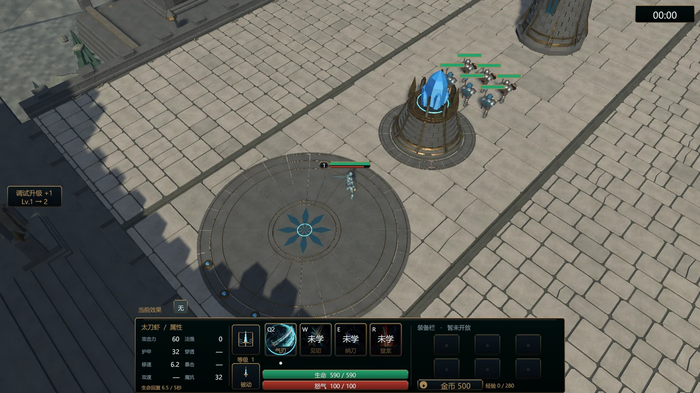
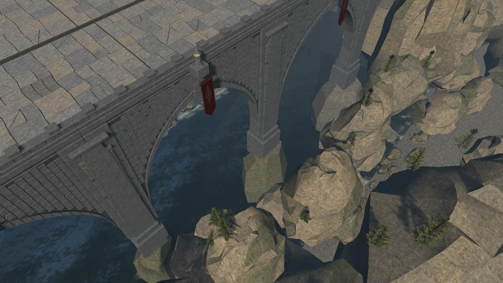

游戏开发作品集.
Unity 客户端开发 / Gameplay 与游戏工具
SingleLaneMOBA
单线战场
操控太刀虾跟随兵线推进。点选小兵或防御塔可以查看属性，点金币可以打开商店原型。实机记录了训练场的太刀派生，以及单线对局从塔下阵亡到摧毁敌方核心的过程。
Unity 6 · C# · URP

太刀虾的招式派生
普攻衔接见切或纳刀。Q 末段升刃，R 突刺命中后可派生兜割，落地再结算伤害。

峡谷里的兵线
在斜俯视镜头下点选敌人、追击或停步。两方小兵交战后，存活的一方继续向防御塔推进。
2.5D 俯视角 RPG 游戏框架
Unity / C# · 场景流程与 UI 系统
从大厅进入序章，在桥头点地寻路。主线保存位置与朝向，大厅仓库单独保存持有的藏品。
探索菜单提供三个手动槽和一个快速槽。录像里在两个地点分别存档，再读回各自的位置。片尾从仓库的票根翻面，切到角色与初始专长选择。
MHWI Fatalis Overlay
黑龙战斗遥测
怪物猎人：世界 · 冰原 · C# / WPF